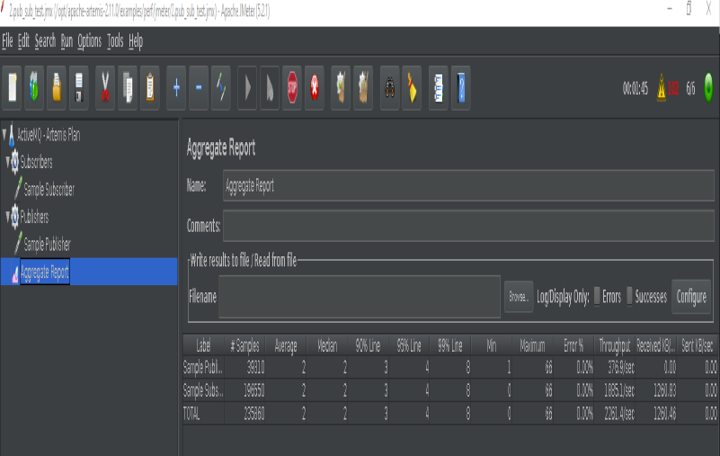
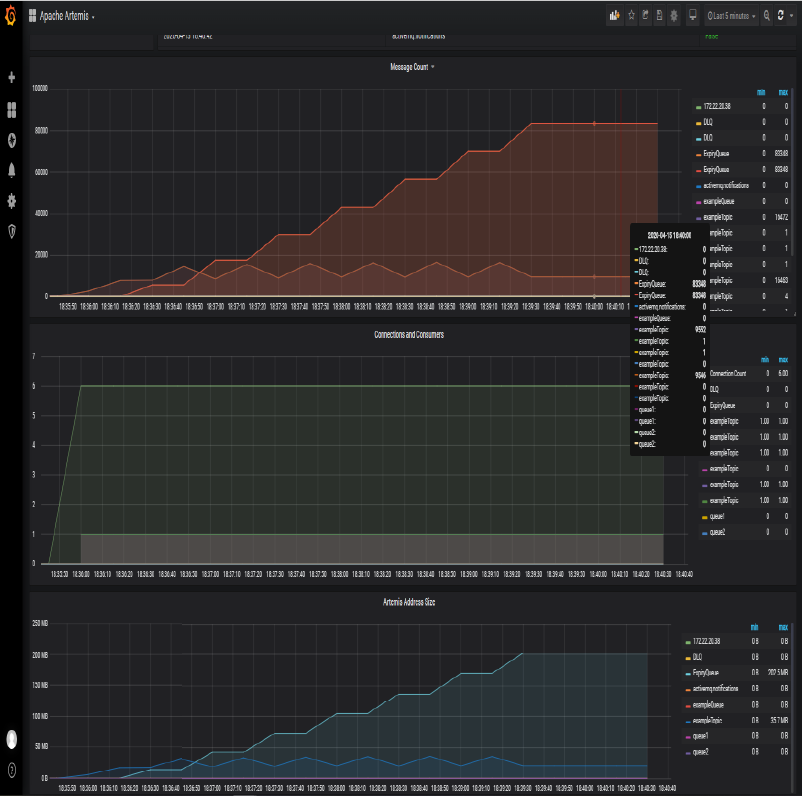
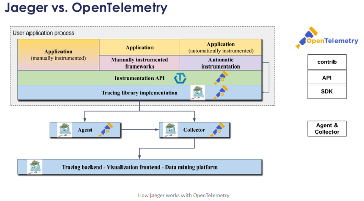
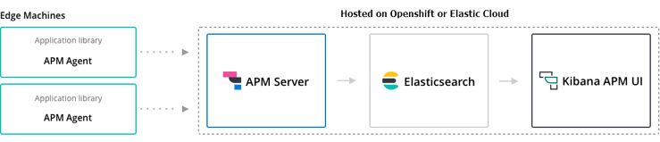

Monitoring and Performance. Prometheus, Grafana, APMs and more
Monitoring and Performance. Prometheus, Grafana, APMs and more¶
- Monitoring
- OpenShift Cluster Monitoring Built-in solutions
- Prometheus
- Grafana
- Proof of Concept: ActiveMQ Monitoring with Prometheus
- Kibana
- Prometheus and Grafana Interactive Learning
- Performance
- List of Performance Analysis Tools
- Debugging Java Applications on OpenShift and Kubernetes
- Distributed Tracing. OpenTelemetry and Jaeger
- Application Performance Management (APM)
- Message Queue Monitoring
- Other Awesome Lists
Monitoring¶
- Wikipedia: Application Performance Index
- thenewstack.io: The Challenges of Monitoring Kubernetes and OpenShift
- dzone.com: Kubernetes Monitoring: Best Practices, Methods, and Existing Solutions Kubernetes handles containers in several computers, removing the complexity of handling distributed processing. But what’s the best way to perform Kubernetes monitoring?
- blog.cloud-mercato.com: New HTTP benchmark tool pycurlb
OpenShift Cluster Monitoring Built-in solutions¶
OpenShift 3.11 Metrics and Logging¶
OpenShift Container Platform Monitoring ships with a Prometheus instance for cluster monitoring and a central Alertmanager cluster. In addition to Prometheus and Alertmanager, OpenShift Container Platform Monitoring also includes a Grafana instance as well as pre-built dashboards for cluster monitoring troubleshooting. The Grafana instance that is provided with the monitoring stack, along with its dashboards, is read-only.
| Monitoring Component | Release | URL |
|---|---|---|
| ElasticSearch | 5 | OpenShift 3.11 Metrics & Logging |
| Fluentd | 0.12 | OpenShift 3.11 Metrics & Logging |
| Kibana | 5.6.13 | kibana 5.6.13 |
| Prometheus | 2.3.2 | OpenShift 3.11 Prometheus Cluster Monitoring |
| Prometheus Operator | Prometheus Operator technical preview | |
| Prometheus Alert Manager | 0.15.1 | OpenShift 3.11 Configuring Prometheus Alert Manager |
| Grafana | 5.2.3 | OpenShift 3.11 Prometheus Cluster Monitoring |
Prometheus and Grafana¶
- redhat.com: How to gather and display metrics in Red Hat OpenShift (Prometheus + Grafana)
- Generally Available today: Red Hat OpenShift Container Platform 3.11 is ready to power enterprise Kubernetes deployments 🌟
- The Challenges of Monitoring Kubernetes and OpenShift 3.11 🌟
- OCP 3.11 Metrics and Logging
- Prometheus Cluster Monitoring 🌟
- Prometheus Alert Manager
- Leveraging Kubernetes and OpenShift for automated performance tests (part 1)
- Building an observability stack for automated performance tests on Kubernetes and OpenShift (part 2) 🌟

Custom Grafana Dashboard for OpenShift 3.11¶
By default OpenShift 3.11 Grafana is a read-only instance. Many organizations may want to add new custom dashboards. This custom grafana will interact with existing Prometheus and will also add all out-of-the-box dashboards plus few more interesting dashboards which may require from day to day operation. Custom Grafana pod uses OpenShift oAuth to authenticate users and assigns “Admin” role to all users so that users can create their own dashboards for additional monitoring.
Getting Started with Custom Dashboarding on OpenShift using Grafana. This repository contains scaffolding and automation for developing a custom dashboarding strategy on OpenShift using the OpenShift Monitoring stac
Capacity Management Grafana Dashboard¶
This repo adds a capacity management Grafana dashboard. The intent of this dashboard is to answer a single question: Do I need a new node? . We believe this is the most important question when setting up a capacity management process. We are aware that this is not the only question a capacity management process may need to be able to answer. Thus, this should be considered as the starting point for organizations to build their capacity management process.
Software Delivery Metrics Grafana Dashboard¶
This repo contains tooling to help organizations measure Software Delivery and Value Stream metrics.
Prometheus for OpenShift 3.11¶
This repo contains example components for running either an operational Prometheus setup for your OpenShift cluster, or deploying a standalone secured Prometheus instance for configurating yourself.
OpenShift 4¶
OpenShift Container Platform includes a pre-configured, pre-installed, and self-updating monitoring stack that is based on the Prometheus open source project and its wider eco-system. It provides monitoring of cluster components and includes a set of alerts to immediately notify the cluster administrator about any occurring problems and a set of Grafana dashboards. The cluster monitoring stack is only supported for monitoring OpenShift Container Platform clusters.
OpenShift Cluster Monitoring components cannot be extended since they are read only.
Monitor your own services (technology preview): The existing monitoring stack can be extended so you can configure monitoring for your own Services.
| Monitoring Component | Deployed By Default | OCP 4.1 | OCP 4.2 | OCP 4.3 | OCP 4.4 |
|---|---|---|---|---|---|
| ElasticSearch | No | 5.6.13.6 | |||
| Fluentd | No | 0.12.43 | |||
| Kibana | No | 5.6.13 | |||
| Prometheus | Yes | 2.7.2 | 2.14.0 | 2.15.2 | |
| Prometheus Operator | Yes | 0.34.0 | 0.35.1 | ||
| Prometheus Alert Manager | Yes | 0.16.2 | 0.19.0 | 0.20.0 | |
| kube-state-metrics | Yes | 1.8.0 | 1.9.5 | ||
| Grafana | Yes | 5.4.3 | 6.2.4 | 6.4.3 | 6.5.3 |
Prometheus¶
- prometheus.io
- dzone.com: Monitoring with Prometheus Learn how to set up a basic instance of Prometheus along with Grafana and the Node Exporter to monitor a simple Linux server.
- github.com/prometheus/prometheus
- Monitoring With Prometheus
- Dzone Refcard: Scaling and Augmenting Prometheus Prometheus is an open-source infrastructure and services monitoring system popular for Kubernetes and cloud-native services and apps. It can help make metric collection easier, correlate events and alerts, provide security, and do troubleshooting and tracing at scale. This Refcard will teach you how to pave the path for Prometheus adoption, what observability looks like beyond Prometheus, and how Prometheus helps provide scalability, high availability, and long-term storage.
- Monitoring Self-Destructing Apps Using Prometheus Learn how to configure Prometheus collectors and their use cases.
- Monitoring kubernetes with Prometheus
- Focus on Detection: Prometheus and the Case for Time Series Analysis
- Ensure High Availability and Uptime With Kubernetes Horizontal Pod Autoscaler (HPA) and Prometheus
- Prometheus 2 Times Series Storage Performance Analyses
- Set Up and Integrate Prometheus With Grafana for Monitoring. How to set up and configure Prometheus and Grafana to enable application performance monitoring for REST applications.
- Discover Applications Running on Kubernetes With Prometheus
- Prometheus vs. Graphite: Which Should You Choose for Time Series or Monitoring?
- PromQL Tutorial
- How to use Ansible to set up system monitoring with Prometheus
- Initial experiences with the Prometheus monitoring system
- prometheus.io/docs/instrumenting/writing_exporters/
- devconnected.com/complete-node-exporter-mastery-with-prometheus/
- www.scalyr.com/blog/prometheus-metrics-by-example/
- Prometheus es un “time series DBMS” y sistema de monitorización completo, que incluye recogida de datos, almacenamiento, visualización y exportación.
- La arquitectura de Prometheus se basa en “pull metrics” (extracción de métricas). En lugar de empujar las métricas (“pushing metrics”) hacia la herramienta de monitorización, extrae (“pull”) las métricas de los servicios (por defecto un “/metrics” HTTP endpoint) en texto plano (parseable por humanos y de fácil diagnóstico). Prometheus también tiene un “push gateway”, de modo que también soporta “push” para métricas específicas cuando el modelo de “pull” no funciona (si bien este método no es recomendable).
- Prometheus se puede conectar a series de tiempo (time series) con un nombre de métrica y pares clave-valor, simplificando la monitorización en complejos entornos cloud multi-nodo.
- La herramienta también proporciona PromQL, para el procesado de datos “time-series”. Permite realizar consultas (queries) para la manipulación de datos y generar nueva información relevante. Con PromQL se pueden generar gráficos, visualizar conjuntos de datos, crear tablas, y generar alertas basadas en parámetros específicos.
- La consola web de Prometheus permite gestionar todas las características y herramientas disponibles en Prometheus. Se pueden utilizar expresiones regulares y consultas avanzadas de PromQL para la creación de conjuntos de datos (datasets) y alertas.
- Prometheus activamente “scrapea” datos, los almacena, y soporta “queries”, “gráficos” y “alertas”, así como proporciona “endpoints” a otros consumidores API como Grafana. Todo esto lo realiza con los siguientes componentes:
- Librerías cliente: instrumentación del código de aplicación (para generar eventos).
- Servidor Prometheus: “scrapeando” y almacenando estos eventos, cuando se generan, como “time series data”. Este es el modelo “pull” más común para la recogida general de métricas en Prometheus.
- Pushgateway: Modelo “Push”, soportando trabajos efímeros de importación de datos. Sólo recomendable en aplicaciones “serverless”, donde las aplicaciones son lanzadas y destruidas bajo demanda, así como las aplicaciones que manejan “batch jobs”.
- Exportadores de Datos: exportando servicios como HAProxy, StatsD, Graphite, etc.
- Prometheus se diferencia de otros sistemas de monitorización con las siguientes funcionalidades:
- Modelo de datos multi-dimensional, donde los “time-series data” se definen por el nombre de la métrica y dimensiones clave/valor.
- Nodos únicos de servidor y autónomos, sin dependencia de almacenamiento distribuido.
- Recogida de datos via un modelo “pull” sobre HTTP.
- “Time Series Data” empujado (“pushed”) a otros destinos de datos vía un gateway intermediario.
- “Targets” descubiertos via “service discovery” ó configuración estática.
- Soporte de federación horizontal y vertical.
- magalix.com: Monitoring of Kubernetes Clusters To Manage Large Scale Projects
Prometheus Storage¶
- Proporciona etiquetado clave-valor y “time-series”. La propia documentación de Prometheus explica cómo se gestiona el almacenamiento en disco (Prometheus Time-Series DB). La ingestión de datos se agrupa en bloques de dos horas, donde cada bloque es un directorio conteniendo uno o más “chunk files” (los datos), además de un fichero de metadatos y un fichero index:
- Almacenamiento de datos en disco (Prometheus Time-Series DB):
./data/01BKGV7JBM69T2G1BGBGM6KB12
./data/01BKGV7JBM69T2G1BGBGM6KB12/meta.json
./data/01BKGV7JBM69T2G1BGBGM6KB12/wal
./data/01BKGV7JBM69T2G1BGBGM6KB12/wal/000002
./data/01BKGV7JBM69T2G1BGBGM6KB12/wal/000001
- Un proceso en segundo plano compacta los bloques de dos horas en otros más grandes.
- Es posible almacenar los datos en otras soluciones de “Time-Series Database” como InfluxDB.
Scalability, High Availability (HA) and Long-Term Storage¶
- Prometheus fue diseñado para ser fácil de desplegar. Es extremadamente fácil ponerlo en marcha, recoger algunas métricas, y empezar a construir nuestra propia herramienta de monitorización. Las cosas se complican cuando se intenta operar a un nivel de escalado considerable.
- Para entender si esto va a ser un problema, conviene plantearse las siguiente preguntas:
- ¿Cuántas métricas puede ingerir el sistema de monitorización y cuántas son necesarias?
- ¿Cuál es la cardinalidad de las métricas? La cardinalidad es el número de etiquetas que cada métrica puede tener. Es una cuestión muy frecuente en las métricas pertenecientes a entornos dinámicos donde a los contenedores se les asignan un ID ó nombre diferente cada vez que son lanzados, reiniciados o movidos entre nodos (caso de kubernetes).
- ¿Es necesaria la Alta Disponibilidad (HA)?
- ¿Durante cuánto tiempo es necesario mantener las métricas y con qué resolución?
- La implementación de HA es laboriosa porque la funcionalidad de cluster requiere añadir plugins de terceros al servidor Prometheus. Es necesario tratar con “backups” y “restores”, y el almacenamiento de métricas por un periodo de tiempo extendido hará que la base de datos crezca exponencialmente. Los servidores Prometheus proporcionan almacenamiento persistente, pero Prometheus no fue creado para el almacenamiento distribuido de métricas a lo largo de múltiples nodos de un cluster con replicación y capacidad curativa (como es el caso de Kubernetes). Esto es conocido como “almacenamiento a largo-plazo” (Long-Term) y actualmente es un requisito en unos pocos casos de uso, por ejemplo en la planificación de la capacidad para monitorizar cómo la infraestructura necesita evolucionar, contracargos para facturar diferentes equipos ó departamentos para un caso específico que han hecho de la infraestructura, análisis de tendencias de uso, o adherirse a regulaciones para verticales específicos como banca, seguros, etc.
Storage Solutions for Prometheus¶
- Prometheus TSDB
- Cortex: Provides horizontally scalable, highly available, multi-tenant, long term storage for Prometheus. Cortex allows for storing time series data in a key-value store like Cassandra, AWS DynamoDB, or Google BigTable. It offers a Prometheus compatible query API, and you can push metrics into a write endpoint. This makes it best suited for cloud environments and multi-tenant scenarios like service providers building hosted and managed platforms.
- Thanos: Open source, highly available Prometheus setup with long term storage capabilities.
- Thanos stores time series data in an object store like AWS S3, Google Cloud Storage, etc. Thanos pushes metrics through a side-car container from each Prometheus server through the gRPC store API to the query service in order to provide a global query view.
- github.com/ruanbekker: Thanos Cluster Setup How to deploy a HA Prometheus setup with Unlimited Data Retention Capabilities on aws cloud S3 with Thanos Metrics.
- Highly Available Prometheus Metrics for Distributed SQL with Thanos on GKE
- InfluxDB: An open-source time series database (TSDB) developed by InfluxData. It is written in Go and optimized for fast, high-availability storage and retrieval of time series data in fields such as operations monitoring, application metrics, Internet of Things sensor data, and real-time analytics. It also has support for processing data from Graphite.
- en.wikipedia.org/wiki/InfluxDB
- en.wikipedia.org/wiki/MIT_License
- dzone: Flux queries New language being developed at InfluxData.
- M3: An open source, large-scale metrics platform developed by Uber. It has its own time series database, M3DB. Like Thanos, M3 also uses a side-car container to push the metrics to the DB. In addition, it supports metric deduplication and merging, and provides distributed query support. Although it’s exciting to see attempts to address the challenges of running Prometheus at scale, these are very young projects that are not widely used yet.
Collectors. Software exposing Prometheus metrics¶
Prometheus Exporters. Plug-in architecture and extensibility with Prometheus Exporters (collectors)¶
- Prometheus proporciona un ecosistema de “exporters”, los cuales permiten que herramientas de terceros puedan exportar sus datos en Prometheus. Muchos componentes de software de código abierto son compatibles por defecto.
- Un “exporter” expone las métricas de uno ó varios “collectors”.
- Prometheus Exporters
- Prometheus JMX Exporter: A process for exposing JMX Beans via HTTP for Prometheus consumption.
- Example: How to Use Prometheus Monitoring With Java to Gather Data. Gathering Java Metrics with Prometheus Monitoring (ActiveMQ)
- Maven Prometheus instrumentation library for JVM applications (client library)
- Example: JMX Exporter with ActiveMQ
Prometheus Exporters Development. Node Exporter¶
- Node exporter puede ser utilizado para exportar las métricas de nuestra aplicación ya que permite exportar un “text-file”. Nuestra aplicación puede escribir datos en un fichero de texto con el formato de datos de Prometheus. Este fichero de texto con datos agregados sería exportado a Prometheus con Node Exporter.
- dzone.com: Monitoring Self-Destructing Apps Using Prometheus Learn how to configure Prometheus collectors and their use cases.
- prometheus.io: Writing Exporters
- devconnected.com: Complete Node Exporter Mastery with Prometheus
- scalyr.com: Prometheus metrics by example: 5 things you can learn
Prometheus Third-party Collectors/Exporters¶
- Some third-party software exposes metrics in the Prometheus format, so no separate exporters are needed.
- Prometheus Third Party Exporters
OpenTelemetry Collector¶
Telegraf Collector¶
- Telegraf Collector
- Telegraf Prometheus Output Plugin
- Telegraf Ansible Role
- Grafana Dashboards with Telegraf Collectors
- dzone: Synthetic Monitoring With Telegraf (white-box monitoring) Monitoring based on metrics exposed by the internals of the system
Micrometer Collector¶
Prometheus Alarms and Event Tracking¶
- Prometheus no soporta rastreo de eventos (event tracking), pero ofrece un soporte completo de alarmas y gestión de alarmas. El lenguaje de consultas (queries) de Prometheus permite en cambio implementar rastreo de eventos por cuenta propia.
Prometheus and Cloud Monitoring¶
- AWS CloudWatch is supported by Prometheus.
Prometheus Installers¶
Binaries, source code or Docker¶
Ansible Roles¶
- Cloud Alchemy: Deploy prometheus node exporter using ansible.
- Idealista: This ansible role installs a Prometheus Node Exporter in a debian environment
- Alexdzyoba: This ansible role installs a Prometheus JMX exporter java agent in a debian nvironment. Inspired by Idealista prometheus_jmx_exporter-role.
- Mesaguy: Installs and manages Prometheus and Prometheus exporters.
- Installs and manages Prometheus server, Alertmanager, PushGateway, and numerous Prometheus exporters
- This role was designed to allow adding new exporters with ease. Regular releases ensure it always provides the latest Prometheus software.
- This role can register client exporters with the Prometheus server/s automatically (see tgroup management below).
- This Ansible role will be migrated to an Ansible Collection.
- galaxy.ansible.com/mesaguy/prometheus
- github.com/mesaguy/ansible-prometheus
- William Yeh: Prometheus for Ansible Galaxy. This role only installs 3 components: Prometheus server, Node exporter, and Alertmanager.
- Undergreen: An Ansible role that installs Prometheus Node Exporter on Ubuntu|Debian|redhat-based machines with systemd|Upstart|sysvinit.
- Mitesh Sharma: Prometheus With Grafana Using Ansible
Prometheus Operator¶
kube Prometheus¶
- kube-prometheus Use Prometheus to monitor Kubernetes and applications running on Kubernetes.
Prometheus Operator with Helm3¶
Kubernetes Cluster Monitoring Stack based on Prometheus Operator¶
- Cluster Monitoring stack for ARM / X86-64 platforms Updated the cluster-monitoring stack for kubernetes to latest versions. Fresh Grafana 7, Prometheus Operator and more. This repository collects Kubernetes manifests, Grafana dashboards, and Prometheus rules combined with documentation and scripts to provide easy to operate end-to-end Kubernetes cluster monitoring with Prometheus using the Prometheus Operator.
Prometheus SaaS Solutions¶
Grafana¶
- Grafana
- Prometheus utiliza plantillas de consola para los dashboards, si bien su curva de aprendizaje de sus múltiples funcionalidades es alta, con una interfaz de usuario insuficiente. Por este motivo es muy habitual utilizar Grafana como interfaz de usuario.
- grafana.com: Provisioning Grafana 🌟 Las últimas versiones de Grafana permiten la creación de “datasources” y “dashboards” con Ansible, mediante las opciones de provisión de Grafana. Funciona con cualquier “datasource” (Prometheus, InfluxDB, etc), incluyendo la configuración de Grafana correspondiente y dejando poco margen para el error humano.
Grafana Dashboards¶
- Grafana Dashboards
- github.com/mlabouardy: Grafana Dashboards
- openlogic.com: How to develop Grafana Dashboards 🌟
- Percona Grafana dashboards for MySQL and MongoDB monitoring using Prometheus 🌟
- Prometheus Monitoring With Grafana. Prometheus Stats Dashboard and Prometheus Benchmark Dashboard. How you construct your Prometheus monitoring dashboard involves trial and error. Grafana makes this exploration very easy and Prometheus has good built-in functionality.
| Monitored Component | Collector | Dashboard Number | URL |
|---|---|---|---|
| ActiveMQ 5.x “classic” | Telegraf | 10702 | Ref1, Ref2, Ref3, Ref4 |
| ActiveMQ Artemis/Red Hat AMQ Broker | JMX Exporter | 9087 | Ref1, Ref2, Ref3 |
| Message Streams like Kafka/Red Hat AMQ Streams | Other | 9777 |
Grafana 7¶
- Open source observability, meet data transformation: Grafana 7.0 promises to connect, unify, and visualize all your data Grafana Labs sets the bar for open source observability with Grafana 7.0: more developer friendly, more data sources, data transformation, and growth in the cloud and on premise
- Grafana 7.0: “We’ve built one of the best visualisation tools and it’s not tied to any one database”
Proof of Concept: ActiveMQ Monitoring with Prometheus¶
The aim of this Proof of Concept is to learn Prometheus by example being Red Hat AMQ 7 (broker) on RHEL the application to be monitored. Red Hat AMQ Broker is based on ActiveMQ Artemis, being this the reason why one of the following proof of concepts is done with Artemis (the other one was run in order to learn telegraf, prometheus and grafana). The same solution tested with Artemis on RHEL is valid for Red Hat AMQ 7 Broker on RHEL.
Red Hat AMQ 7 Broker is OpenShift 3.11 compliant as Technical Preview and deployed as Operator.
Red Hat AMQ 7 Operator is fully supported in OpenShift 4.x, initially with Prometheus and Grafana monitoring already setup and maintained by AMQ Operator. It is recommended to check the metrics collected and displayed by AMQ Operator with another Proof of Concept in OpenShift 4.x.
PoC: ActiveMQ 5.x Monitoring with Telegraf Collector, Prometheus and Grafana Dashboard 10702¶
- Latest releases of Telegraf and Prometheus have been used in this Proof of Concept:
- telegraf-1.14.0-1 (rpm)
- grafana-6.3.2-1.x86_64 (rpm) This is the release specified as requirement for this grafana dashboard. Newer releases of grafana are probably compliant.
- prometheus-2.17.1.linux-amd64 (.tar.gz)
- apache-activemq-5.15.12 (.tar.g)
- References:
Deployment and Configuration¶
- Systemd
/etc/systemd/system/prometheus.service
/etc/systemd/system/activemq.service
/usr/lib/systemd/system/telegraf.service
/usr/lib/systemd/system/grafana-server.service
- Systemctl
systemctl daemon-reload
for service in activemq telegraf prometheus grafana-server; do systemctl status $service; done
for service in activemq telegraf prometheus grafana-server; do systemctl restart $service; done
for service in activemq telegraf prometheus grafana-server; do systemctl stop $service; done
for service in activemq telegraf prometheus grafana-server; do systemctl start $service; done
- Jolokia Permissions already integrated in ActiveMQ by default. Jolokia permissions have been disabled by renaming “jolokia-access.xml” to “jolokia-access.xmlORIG” (this is a Proof of Concept):
mv /opt/activemq/webapps/api/WEB-INF/classes/jolokia-access.xml /opt/activemq/webapps/api/WEB-INF/classes/jolokia-access.xmlORIG
- Telegraf Jolokia Input Plugin /etc/telegraf/telegraf.d/activemq.conf
[[inputs.jolokia2_agent]]
urls = ["http://localhost:8161/api/jolokia"]
name_prefix = "activemq."
username = "admin"
password = "admin"
### JVM Generic
[[inputs.jolokia2_agent.metric]]
name = "OperatingSystem"
mbean = "java.lang:type=OperatingSystem"
paths = ["ProcessCpuLoad","SystemLoadAverage","SystemCpuLoad"]
[[inputs.jolokia2_agent.metric]]
name = "jvm_runtime"
mbean = "java.lang:type=Runtime"
paths = ["Uptime"]
[[inputs.jolokia2_agent.metric]]
name = "jvm_memory"
mbean = "java.lang:type=Memory"
paths = ["HeapMemoryUsage", "NonHeapMemoryUsage", "ObjectPendingFinalizationCount"]
[[inputs.jolokia2_agent.metric]]
name = "jvm_garbage_collector"
mbean = "java.lang:name=*,type=GarbageCollector"
paths = ["CollectionTime", "CollectionCount"]
tag_keys = ["name"]
[[inputs.jolokia2_agent.metric]]
name = "jvm_memory_pool"
mbean = "java.lang:name=*,type=MemoryPool"
paths = ["Usage", "PeakUsage", "CollectionUsage"]
tag_keys = ["name"]
tag_prefix = "pool_"
### ACTIVEMQ
[[inputs.jolokia2_agent.metric]]
name = "queue"
mbean = "org.apache.activemq:brokerName=*,destinationName=*,destinationType=Queue,type=Broker"
paths = ["QueueSize","EnqueueCount","ConsumerCount","DispatchCount","DequeueCount","ProducerCount","InFlightCount"]
tag_keys = ["brokerName","destinationName"]
[[inputs.jolokia2_agent.metric]]
name = "topic"
mbean = "org.apache.activemq:brokerName=*,destinationName=*,destinationType=Topic,type=Broker"
paths = ["ProducerCount","DequeueCount","ConsumerCount","QueueSize","EnqueueCount"]
tag_keys = ["brokerName","destinationName"]
[[inputs.jolokia2_agent.metric]]
name = "broker"
mbean = "org.apache.activemq:brokerName=*,type=Broker"
paths = ["TotalConsumerCount","TotalMessageCount","TotalEnqueueCount","TotalDequeueCount","MemoryLimit","MemoryPercentUsage","StoreLimi
t","StorePercentUsage","TempPercentUsage","TempLimit"]
tag_keys = ["brokerName"]
- InfluxDB: Not required.
- Defautl /etc/telegraf/telegraf.conf file is modified to allow Prometheus to collect ActiveMQ metrics by pulling Telegraf metrics:
# # Configuration for the Prometheus client to spawn
[[outputs.prometheus_client]]
# ## Address to listen on
listen = ":9273"
## Path to publish the metrics on.
path = "/metrics"
...
...
# # Gather ActiveMQ metrics
[[inputs.activemq]]
# ## ActiveMQ WebConsole URL
url = "http://127.0.0.1:8161"
# ## Credentials for basic HTTP authentication
username = "admin"
password = "admin"
...
...
- scrape_configs in /opt/prometheus/prometheus.yml
scrape_configs:
# The job name is added as a label `job=<job_name>` to any timeseries scraped from this config.
- job_name: 'prometheus'
# metrics_path defaults to '/metrics'
# scheme defaults to 'http'.
static_configs:
- targets: ['localhost:9090']
- job_name: 'broker'
static_configs:
- targets: ['localhost:9273']
- Grafana Dashboard 10702 is imported from Grafana UI -> “import dashboard”. Prometheus data source is connected manually with Grafana via Grafana UI.
PoC: ActiveMQ Artemis Monitoring with Prometheus Metrics Plugin (Micrometer Collector) and Prometheus. Grafana Dashboard not available¶
- Latest releases of ActiveMQ Artemis and Prometheus have been used in this Proof of Concept:
- ActiveMQ Artemis can export metrics to several monitoring systems via Artemis Prometheus Metrics Plugin, which uses Micrometer Collector. Check this link.
- Unfortunately, there’s no Grafana Dashboard available for this plugin. In consequence a new Grafana Dashboard has to be developed from scratch.
- Artemis Prometheus Metrics Plugin is the recommended approach. Use JMX Exporter to export other metrics.
- References:
Deployment and Configuration¶
- systemd
/etc/systemd/system/prometheus.service
/etc/systemd/system/artemis.service
/usr/lib/systemd/system/grafana-server.service
- systemctl
# systemctl enable artemis
# systemctl daemon-reload
for service in artemis prometheus grafana-server; do systemctl status $service; done
for service in artemis prometheus grafana-server; do systemctl restart $service; done
for service in artemis prometheus grafana-server; do systemctl stop $service; done
for service in artemis prometheus grafana-server; do systemctl start $service; done
- Creation of Artemis Broker
cd /var/lib
/opt/artemis/bin/artemis create --addresses 192.168.1.38 --allow-anonymous --home /opt/artemis --host <my_servername.my_domain> --http-host <my_servername.my_domain> --name <my_servername.my_domain> --queues queue1,queue2 --user artemisuser --password artemispassword artemisbroker
Creating ActiveMQ Artemis instance at: /var/lib/artemisbroker
Auto tuning journal ...
done! Your system can make 13.89 writes per millisecond, your journal-buffer-timeout will be 72000
You can now start the broker by executing:
"/var/lib/artemisbroker/bin/artemis" run
Or you can run the broker in the background using:
"/var/lib/artemisbroker/bin/artemis-service" start
- Permissions change in broker directory
# chown -R activemq. /var/lib/artemisbroker/
- Running artemis broker
# su - activemq
$ cd /var/lib/artemisbroker/
$ /var/lib/artemisbroker/bin/artemis run
-
Artemis Prometehus Console Access. We can now access to Artemis Console via http://my_servername.my_domain:8161/console using the credentials specified during the CLI deployment (artemisuser / artemispassword)
activemq@my_servername ~]$ pwd
/home/activemq
[activemq@my_servername ~]$ cd artemis-prometheus-metrics-plugin/
[activemq@my_servername artemis-prometheus-metrics-plugin]$ mvn install
...
[INFO] Replacing /home/activemq/artemis-prometheus-metrics-plugin/artemis-prometheus-metrics-plugin/target/artemis-prometheus-metrics-plug
in-1.0.0.CR1.jar with /home/activemq/artemis-prometheus-metrics-plugin/artemis-prometheus-metrics-plugin/target/artemis-prometheus-metrics
-plugin-1.0.0.CR1-shaded.jar
[INFO] Dependency-reduced POM written at: /home/activemq/artemis-prometheus-metrics-plugin/artemis-prometheus-metrics-plugin/dependency-re
duced-pom.xml
[INFO]
[INFO] --- maven-install-plugin:2.4:install (default-install) @ artemis-prometheus-metrics-plugin ---
[INFO] Installing /home/activemq/artemis-prometheus-metrics-plugin/artemis-prometheus-metrics-plugin/target/artemis-prometheus-metrics-plu
gin-1.0.0.CR1.jar to /home/activemq/.m2/repository/org/apache/activemq/artemis-prometheus-metrics-plugin/1.0.0.CR1/artemis-prometheus-metr
ics-plugin-1.0.0.CR1.jar
[INFO] Installing /home/activemq/artemis-prometheus-metrics-plugin/artemis-prometheus-metrics-plugin/dependency-reduced-pom.xml to /home/a
ctivemq/.m2/repository/org/apache/activemq/artemis-prometheus-metrics-plugin/1.0.0.CR1/artemis-prometheus-metrics-plugin-1.0.0.CR1.pom
[INFO] ------------------------------------------------------------------------
[INFO] Reactor Summary for artemis-prometheus-metrics-pom 1.0.0.CR1:
[INFO]
[INFO] artemis-prometheus-metrics-pom ..................... SUCCESS [ 0.328 s]
[INFO] ActiveMQ Artemis Prometheus Metrics Plugin Servlet . SUCCESS [ 7.964 s]
[INFO] ActiveMQ Artemis Prometheus Metrics Plugin ......... SUCCESS [ 34.596 s]
[INFO] ------------------------------------------------------------------------
[INFO] BUILD SUCCESS
[INFO] ------------------------------------------------------------------------
[INFO] Total time: 43.030 s
[INFO] Finished at: 2020-04-10T13:36:27+02:00
[INFO] ------------------------------------------------------------------------
- New artifact is copied to artemis broker. Artefact artemis-prometheus-metrics-plugin/target/artemis-prometheus-metrics-plugin-VERSION.jar is copied to our broker:
[activemq@my_servername artemis-prometheus-metrics-plugin]$ cp artemis-prometheus-metrics-plugin/target/artemis-prometheus-metrics-plugin-
1.0.0.CR1.jar /var/lib/artemisbroker/lib/
- Edition of file /var/lib/artemisbroker/etc/broker.xml
<metrics-plugin class-name="org.apache.activemq.artemis.core.server.metrics.plugins.ArtemisPrometheusMetricsPlugin"/>
- Creation of
/web
[activemq@my_servername artemisbroker]$ mkdir /var/lib/artemisbroker/web
- Artifact artemis-prometheus-metrics-plugin-servlet/target/metrics.war is copied to
/web :
[activemq@my_servername artemis-prometheus-metrics-plugin]$ cp artemis-prometheus-metrics-plugin-servlet/target/metrics.war /var/lib/artem
isbroker/web/
- Below web component added to
/etc/bootstrap.xml :
[activemq@my_servername artemis-prometheus-metrics-plugin]$ vim /var/lib/artemisbroker/etc/bootstrap.xml
...
<app url="metrics" war="metrics.war"/>
...
- Restart of Artemis Broker
- Prometheus configuration, scrape_configs in /opt/prometheus/prometheus.yml :
scrape_configs:
# The job name is added as a label `job=<job_name>` to any timeseries scraped from this config.
- job_name: 'prometheus'
# metrics_path defaults to '/metrics'
# scheme defaults to 'http'.
static_configs:
- targets: ['localhost:9090']
- job_name: 'broker'
static_configs:
- targets: ['localhost:8161']
- Last step: Apparently there’s not Grafana Dashboard available for this use case. It is required to develop a new Grafana Dashboard.
Validation of Artemis Broker Monitoring with JMeter¶
- In order to validate our Artemis Broker Monitoring solution we need to “inject traffic/data/metrics” with for example Pub/Sub messages.
- We can achieve this with a little of java code or by sending messages via Artemis Web Console -> “Operations” tab.
- Another option is running the jmeter test plans available on Artemis’ github repo. The procedure is described below. Remember to create the queues and addresses (topics) defined in jmeter example test plans.
JMeter Example Test Plans¶
- Latest release of Apache JMeter deployed in /opt
- Library artemis-jms-client-all-2.11.0.jar is copied to $JMETER_HOME/lib :
$ cp /opt/artemis/lib/client/artemis-jms-client-all-2.11.0.jar /opt/apache-jmeter-5.2.1/lib/
- jndi.properties file is modified with Artemis’ IP address (it is not listening on localhost):
$ vim /opt/artemis/examples/perf/jmeter/jndi.properties
$ cat /opt/artemis/examples/perf/jmeter/jndi.properties
connectionFactory.ConnectionFactory=tcp://192.168.1.38:61616
- jndi.properties is packaged in a jar file and moved to $JMETER_HOME/lib :
[activemq@my_servername ~]$ cd /opt/artemis/examples/perf/jmeter/
[activemq@my_servername jmeter]$ ls -l
total 28
-rw-rw-r-- 1 activemq activemq 11887 Jan 10 16:22 1.jms_p2p_test.jmx
-rw-rw-r-- 1 activemq activemq 8442 Jan 10 16:22 2.pub_sub_test.jmx
-rw-rw-r-- 1 activemq activemq 833 Jan 10 16:22 jndi.properties
[activemq@my_servername jmeter]$ jar -cf artemis-jndi.jar jndi.properties
[activemq@my_servername jmeter]$ ls -l
total 32
-rw-rw-r-- 1 activemq activemq 11887 Jan 10 16:22 1.jms_p2p_test.jmx
-rw-rw-r-- 1 activemq activemq 8442 Jan 10 16:22 2.pub_sub_test.jmx
-rw-rw-r-- 1 activemq activemq 946 May 15 08:46 artemis-jndi.jar
-rw-rw-r-- 1 activemq activemq 833 Jan 10 16:22 jndi.properties
[activemq@my_servername jmeter]$ cp artemis-jndi.jar /opt/apache-jmeter-5.2.1/lib/
- Example Test Plans available at Artemis GitHub Repo are run by JMeter (from within the GUI or the CLI):
[activemq@my_servername ~]$ cd /opt/artemis/examples/perf/jmeter/
[activemq@my_servername jmeter]$ ls -la
total 32
drwxrwxr-x 2 activemq activemq 101 May 15 08:46 .
drwxrwxr-x 3 activemq activemq 19 Jan 10 16:22 ..
-rw-rw-r-- 1 activemq activemq 11887 Jan 10 16:22 1.jms_p2p_test.jmx
-rw-rw-r-- 1 activemq activemq 8442 Jan 10 16:22 2.pub_sub_test.jmx
-rw-rw-r-- 1 activemq activemq 946 May 15 08:46 artemis-jndi.jar
-rw-rw-r-- 1 activemq activemq 833 Jan 10 16:22 jndi.properties
[activemq@my_servername jmeter]$
[activemq@my_servername bin]$ cd
[activemq@my_servername ~]$ pwd
/home/activemq
[activemq@my_servername ~]$ /opt/apache-jmeter-5.2.1/bin/jmeter.sh -n -t /opt/artemis/examples/perf/jmeter/1.jms_p2p_test.jmx -l results-file-1.txt -j 1.log
[activemq@my_servername ~]$ /opt/apache-jmeter-5.2.1/bin/jmeter.sh -n -t /opt/artemis/examples/perf/jmeter/2.pub_sub_test.jmx -l results-file-2.txt -j 2.log
- We can now see metrics displayed on Grafana and Artemis Dashboard:
| JMeter | Artemis Grafana | Artemis Dashboard |
|---|---|---|
|  |  |  |
Kibana¶
- Kibana
- dzone: Kibana Tutorial: Part 1 - Getting Started
- dzone: Getting Started With Kibana Advanced Searches
- dzone: Kibana Hacks: 5 Tips and Tricks
Prometheus and Grafana Interactive Learning¶
Performance¶
- dzone.com: The Keys to Performance Tuning and Testing
- dzone.com: How Performance Tuning and Testing are Changing
- Performance Patterns in Microservices-Based Integrations 🌟 Almost all applications that perform anything useful for a given business need to be integrated with one or more applications. With microservices-based architecture, where a number of services are broken down based on the services or functionality offered, the number of integration points or touch points increases massively.
List of Performance Analysis Tools¶
- Threadumps + heapdumps + GC analysis tools
- en.wikipedia.org/wiki/List_of_performance_analysis_tools
- InspectIT
- VisualVM 🌟
- OverOps
- FusionReactor
- tier1app.com
- fastthread.io 🌟
- gceasy.io 🌟
- heaphero.io
Thread Dumps. Debugging Java Applications¶
- How to read a Thread Dump
- Performance Patterns in Microservices-Based Integrations 🌟 A must read!
- Dzone: how to take thread dumps
- Thread Dump Analyzers: fastThread, Spotify TDA, IBM Thread and Monitor Dump Analyzer for Java, TDA - Thread Dump Analyzer
- FastThread.io: Thread dumps can be uploaded via Web or API Call from within the POD (jstack must be available within the container):
#!/bin/sh
# Generate N thread dumps of the process PID with an INTERVAL between each dump.
if [ $# -ne 3 ]; then
echo Generates Java thread dumps using the jstack command.
echo
echo usage: $0 process_id repetitions interval
exit 1
fi
PID=$1
N=$2
INTERVAL=$3
for ((i=1;i<=$N;i++))
do
d=$(date +%Y%m%d-%H%M%S)
dump="threaddump-$PID-$d.txt"
echo $i of $N: $dump
jstack -l $PID > $dump
curl -X POST --data-binary @./$dump https://fastthread.io/fastthread-api?apiKey=<APIKEY> --header "Content-Type:text"
sleep $INTERVAL
done
- How to run this script from within the POD:
./script_thread_dump.sh 1 15 3, where:- “1”: PID of java process (“1” in containers running a single process, check with “ps ux” command).
- “15”: 15 repetitions or thread dumps
- “3”: interval of 3 seconds between each thread dump.
- According to some references only 3 thread dumps captured in a timeframe of 10 seconds is necessary (when we want to troubleshoot a Java issue during a service degradation).
- Sample thread dump analysis reports generated by fastThread:
Debugging Java Applications on OpenShift and Kubernetes¶
- developers.redhat.com: Troubleshooting java applications on openshift (Jolokia)
- Debugging Java Applications On OpenShift and Kubernetes
- Remote Debugging of Java Applications on OpenShift
- VisualVM: JVisualVM to an Openshift pod
- redhat.com: How do I analyze a Java heap dump?
Distributed Tracing. OpenTelemetry and Jaeger¶
- Microservice Observability with Distributed Tracing: OpenTelemetry.io 🌟 (OpenTracing.io + OpenCensus.io = OpenTelemetry.io)
- Jaeger 🌟
- zipkin.io
- OpenTracing.io
Microservice Observability with Distributed Tracing. OpenTelemetry.io¶
- Used for monitoring and troubleshooting microservices-based distributed systems.
- OpenTelemetry.io:
- Unified standard (open, vendor-neutral API), merge of OpenCensus.io and OpenTracing.io.
- “A single set of system components and language-specific telemetry libraries” to standardize how the industry uses metrics, traces, and eventually logs to enable observability.
- A major component of the OpenTelemetry specification is distributed tracing.
- Tracing is about analyzing, recording, and describing transactions.
- Distributed Tracing: Troubleshooting requests between interconnected cloud-based microservices can’t always be done with logs and metrics alone. This is where distributed tracing comes into play: It provides developers with a detailed view of individual requests as they “hop” through a system of microservices. With distributed tracing you can:
- Trace the path of a request as it travels across a complex system.
- Discover the latency of the components along that path.
- Know which component in the path is creating a bottleneck or failure.
- Performance: Latency is a very important metric in microservices. Latency problems in one service will impact the overall request latency when chaining calls to different microservices. Every call to a microservice should record a trace, which is basically a record of how much time it took to respond. It’s possible to add more details to the function level, including the action, the result, and the pass to the next service. The hard part is triaging all traces in a request from a client. Usually, a trace ID header has to be sent in every request. If there isn’t one, the logging library creates it and it will represent the first trace in a request. Adding traces with OpenCensus is simply a matter of including the libraries and registering an exporter.
- Monitoring in a Microservices/Kubernetes World: In distributed system architectures like microservices, having visibility from different perspectives will be critical at troubleshooting time. Many things could happen in a request when there are many parts constantly interacting at the same time. The most common method is to write logs to the stdout and stderr streams.
- For example, a latency problem in the system could exist because a microservice is not responding correctly. Maybe Kubernetes is restarting the pod too frequently, or perhaps the cluster is out of capacity and can’t schedule any more pods. But for this reason, tools like Istio exist; by injecting a container in every pod, you can get a pretty good baseline of telemetry. Additionally, when you add instrumentation with libraries like OpenCensus, you can deeply understand what’s happening with and within each service.
- All this information will need a storage location, and as a good practice, you might want to have it a centralized location to provide access to anyone in the team — not just for the operations team.
- Older Distributed Tracing Solutions:
- Medium: Distributed Tracing and Monitoring using OpenCensus
- Dzone: Zipkin vs. Jaeger: Getting Started With Tracing Learn about Zipkin and Jaeger, how they work to add request tracing to your logging routine, and how to choose which one is the right fit for you.
- opensource.com: Distributed tracing in a microservices world What is distributed tracing and why is it so important in a microservices environment?
- opensource.com: 3 open source distributed tracing tools Find performance issues quickly with these tools, which provide a graphical view of what’s happening across complex software systems.
- newrelic.com: OpenTracing, OpenCensus, OpenTelemetry, and New Relic (Best overview of OpenTelemetry)
- There’s no OpenTelemetry UI, instead Jaeger UI (or any APM like Dynatrace or New Relic) can be used as “Tracing backend + Visualization frontend + Data mining platform” of OpenTelemetry API/SDK.


Jaeger VS OpenTelemetry. How Jaeger works with OpenTelemetry¶
- medium: Jaeger VS OpenTracing VS OpenTelemetry
- medium: Using Jaeger and OpenTelemetry SDKs in a mixed environment with W3C Trace-Context

Application Performance Management (APM)¶
- APM in wikipedia: The monitoring and management of performance and availability of software applications. APM strives to detect and diagnose complex application performance problems to maintain an expected level of service. APM is “the translation of IT metrics into business meaning.”
- Tip: Download APM report from IT Central Station
- Awesome APM 🌟
- dzone.com: APM Tools Comparison
- dzone.com: Java Performance Monitoring: 5 Open Source Tools You Should Know
- dzone.com: 14 best performance testing tools and APM solutions
- Exception Tracking:
- sentry.io
- APMs like Dynatrace, etc.
- APM Tools:
Elastic APM¶
- Elastic APM
- Elastic APM Server:
- Mininimum elasticsearch requirement is 6.2.x or higher
- Built-in elasticsearch 5.6 in Openshift 3 & Openshift 4 cannot be integrated with Elastic APM Server.
- Solutions: Deploy a higher version of Elasticsearch + Kibana on a new Project dedicated to Elastic APM; or setup an Elastic Cloud account.
- Elastic APM Server Docker image (“oss” & openshift compliant).
- elastic.co: Using the Elastic APM Java Agent on Kubernetes

Dynatrace APM¶
- adictosaltrabajo.com: Monitorización y análisis de rendimiento de aplicaciones con Dynatrace APM
- dynatrace.com: openshift monitoring
- dynatrace.com: Dynatrace monitoring for Kubernetes and OpenShift
- dynatrace.com: Deploy OneAgent on OpenShift Container Platform
- Successful Kubernetes Monitoring – Three Pitfalls to Avoid
- My Dynatrace proof of concept 🌟
- Tutorial: Guide to automated SRE-driven performance engineering 🌟
Message Queue Monitoring¶
| Messaging Solution | Monitoring Solution | URL |
|---|---|---|
| ActiveMQ 5.8.0+ | Dynatrace | ref |
| ActiveMQ Artemis | Micrometer Collector + Prometheus | ref1, ref2 |
| IBM MQ | IBM MQ Exporter for Prometheus | ref |
| Kakfa | Dynatrace | ref1, ref2, ref3 |
| Kafka | Prometheus JMX Exporter | ref1, ref2, ref3, ref4, ref5, ref6, ref7 |
| Kafka | Kafka Exporter Use JMX Exporter to export other Kafka’s metrics |
ref |
| Kafka | Kafdrop – Kafka Web UI | ref |
| Kafka | ZooNavigator: Web-based ZooKeeper UI | ref |
| Kafka | CMAK (Cluster Manager for Apache Kafka, previously known as Kafka Manager) | ref |
| Kafka | Xinfra Monitor (renamed from Kafka Monitor, created by Linkedin) | ref |
| Kafka | Telegraf + InfluxDB | ref |
| Red Hat AMQ Broker (ActiveMQ Artemis) | Prometheus plugin for AMQ Broker To monitor the health and performance of your broker instances, you can use the Prometheus plugin for AMQ Broker to monitor and store broker runtime metrics. Prometheus is software built for monitoring large, scalable systems and storing historical runtime data over an extended time period. The AMQ Broker Prometheus plugin exports the broker runtime metrics to Prometheus format, enabling you to use Prometheus itself to visualize and run queries on the data. You can also use a graphical tool, such as Grafana, to configure more advanced visualizations and dashboards for the metrics that the Prometheus plugin collects. The metrics that the plugin exports to Prometheus format are listed below. A description of each metric is exported along with the metric itself. |
ref1, ref2, ref3 |
| Red Hat AMQ Streams (Kafka) | JMX, OpenTracing+Jaeger ZooKeeper, the Kafka broker, Kafka Connect, and the Kafka clients all expose management information using Java Management Extensions (JMX). Most management information is in the form of metrics that are useful for monitoring the condition and performance of your Kafka cluster. Like other Java applications, Kafka provides this management information through managed beans or MBeans. JMX works at the level of the JVM (Java Virtual Machine). To obtain management information, external tools can connect to the JVM that is running ZooKeeper, the Kafka broker, and so on. By default, only tools on the same machine and running as the same user as the JVM are able to connect. Distributed Tracing with Jaeger: - Kafka Producers, Kafka Consumers, and Kafka Streams applications (referred to as Kafka clients) - MirrorMaker and Kafka Connect - Kafka Bridge |
ref1,ref2 |
| Red Hat AMQ Streams Operator | AMQ Streams Operator (Prometheus & Jaeger), strimzi, jmxtrans How to monitor AMQ Streams Kafka, Zookeeper and Kafka Connect clusters using Prometheus to provide monitoring data for example Grafana dashboards. Support for distributed tracing in AMQ Streams, using Jaeger: - You instrument Kafka Producer, Consumer, and Streams API applications for distributed tracing using an OpenTracing client library. This involves adding instrumentation code to these clients, which monitors the execution of individual transactions in order to generate trace data. - Distributed tracing support is built in to the Kafka Connect, MirrorMaker, and Kafka Bridge components of AMQ Streams. To configure these components for distributed tracing, you configure and update the relevant custom resources. |
ref1, ref2, ref3 strimzi, ref4: jmxtrans, ref5: banzai operator |
| Red Hat AMQ Broker Operator | Prometheus (recommended) or Jolokia REST to JMX To monitor runtime data for brokers in your deployment, use one of these approaches: - Section 9.1, “Monitoring broker runtime data using Prometheus” - Section 9.2, “Monitoring broker runtime data using JMX” In general, using Prometheus is the recommended approach. However, you might choose to use the Jolokia REST interface to JMX if a metric that you need to monitor is not exported by the Prometheus plugin. For more information about the broker runtime metrics that the Prometheus plugin exports, see Section 9.1.1, “Overview of Prometheus metrics” |
ref1, ref2, ref3, ref4, ref5 |
Red Hat AMQ 7 Broker Monitoring solutions based on Prometheus and Grafana¶
This is a selection of monitoring solutions suitable for RH AMQ 7 Broker based on Prometheus and Grafana:
| Environment | Collector/Exporter | Details/URL |
|---|---|---|
| RHEL | Prometheus Plugin for AMQ Broker | ref |
| RHEL | Prometheus JMX Exporter | Same solution applied to ActiveMQ Artemis |
| OpenShift 3 | Prometheus Plugin for AMQ Broker | Grafana Dashboard not available, ref1, ref2 |
| OpenShift 4 | Prometheus Plugin for AMQ Broker | Check if Grafana Dashboard is automatically setup by Red Hat AMQ Operator |
| OpenShift 3 | Prometheus JMX Exporter | Grafana Dashboard not available, ref1, ref2 |